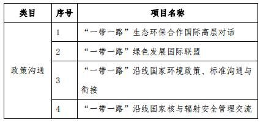
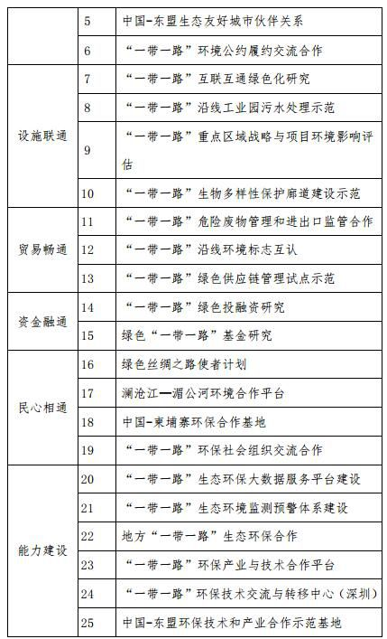

《“一带一路”生态环境保护合作规划》 |
| “一带一路”生态环境保护合作规划 |
| 2017年5月 |
| 推动共建丝绸之路经济带和21世纪海上丝绸之路（以下简称“一带一路”）倡议旨在促进沿线各国经济繁荣与区域经济合作，加强不同文明交流互鉴，促进世界和平发展。自“一带一路”倡议提出以来，“一带一路”建设进展迅速，一批重大工程和国际产能合作项目落地。在生态环保合作领域，中国积极与沿线国家深化多双边对话、交流与合作，强化生态环境信息支撑服务，推动环境标准、技术和产业合作，取得积极进展和良好成效。 |
| 为进一步贯彻落实《推动共建丝绸之路经济带和21世纪海上丝绸之路的愿景与行动》（以下简称《愿景与行动》）、《“十三五”生态环境保护规划》和《关于推进绿色“一带一路”建设的指导意见》，加强生态环保合作，发挥生态环保在“一带一路”建设中的服务、支撑和保障作用，共建绿色“一带一路”，环境保护部编制《“一带一路”生态环境保护合作规划》。 |
| 一、重要意义 |
| （一）生态环保合作是绿色“一带一路”建设的根本要求 |
| 中国高度重视绿色“一带一路”建设。中国国家主席习近平多次强调，要践行绿色发展理念，着力深化环保合作，加大生态环境保护力度，携手打造绿色丝绸之路。《愿景与行动》提出，在投资贸易中突出生态文明理念，加强生态环境、生物多样性和应对气候变化合作。推进生态环保合作是践行生态文明和绿色发展理念、提升“一带一路”建设绿色化水平、推动实现可持续发展和共同繁荣的根本要求。 |
| （二）生态环保合作是实现区域经济绿色转型的重要途径 |
| “一带一路”沿线国家多为发展中国家和新兴经济体，普遍面临工业化和城镇化带来的环境污染、生态退化等多重挑战，加快转型、推动绿色发展的呼声不断增强。中国和一些沿线国家积极探索环境与经济协调发展模式，大力发展绿色经济，取得了一些成功经验。开展生态环保合作有利于促进沿线国家生态环境保护能力建设，推动沿线国家跨越传统发展路径，处理好经济发展和环境保护关系，最大限度减少生态环境影响，是实现区域经济绿色转型的重要途径。 |
| （三）生态环保合作是落实2030年可持续发展议程的重要举措 |
| 绿色发展已成为世界各国发展的共识，联合国2030年可持续发展议程旨在共同提高全人类福祉，明确提出绿色发展与生态环保的具体目标，为未来十几年世界各国可持续发展和国际发展合作指引方向。“一带一路”生态环保合作将有力促进沿线国家实现2030年可持续发展议程环境目标。 |
| 二、总体要求 |
| （一）合作思路 |
| 牢固树立和贯彻落实创新、协调、绿色、开放、共享的发展理念，秉持和平合作、开放包容、互学互鉴、互利共赢的丝绸之路精神，坚持共商、共建、共享，以促进共同发展、实现共同繁荣为导向，有力有序有效地将绿色发展要求全面融入政策沟通、设施联通、贸易畅通、资金融通、民心相通中，构建多元主体参与的生态环保合作格局，提升“一带一路”沿线国家生态环保合作水平，为实现2030年可持续发展议程环境目标作出贡献。 |
| （二）基本原则 |
| 理念先行，绿色引领。以生态文明和绿色发展理念引领“一带一路”建设，切实推进政策沟通、设施联通、贸易畅通、资金融通和民心相通的绿色化进程，提高绿色竞争力。 |
| 共商共建，互利共赢。充分尊重沿线国家发展需求，加强战略对接和政策沟通，推动达成生态环境保护共识，共同参与生态环保合作，打造利益共同体、责任共同体和命运共同体，促进经济发展与环境保护双赢。 |
| 政府引导，多元参与。完善政策支撑，搭建合作平台，落实企业环境治理主体责任，动员全社会积极参与，发挥市场作用，形成政府引导、企业承担、社会参与的生态环保合作网络 |
| 统筹推进，示范带动。加强统一部署，选择重点地区和行业，稳步有序推进，及时总结经验和成效，以点带面、形成辐射效应，提升生态环保合作水平。 |
| （三）发展目标 |
| 到2025年，推进生态文明和绿色发展理念融入“一带一路”建设，夯实生态环保合作基础，形成生态环保合作良好格局。以六大经济走廊为合作重点，进一步完善生态环保合作平台建设，提高人员交流水平；制定落实一系列生态环保合作支持政策，加强生态环保信息支撑；在铁路、电力等重点领域树立一批优质产能绿色品牌；一批绿色金融工具应用于投资贸易项目，资金呈现向环境友好型产业流动趋势；建成一批环保产业合作示范基地、环境技术交流与转移基地、技术示范推广基地和科技园区等国际环境产业合作平台。 |
| 到2030年，推动实现2030可持续发展议程环境目标，深化生态环保合作领域，全面提升生态环保合作水平。深入拓展在环境污染治理、生态保护、核与辐射安全、生态环保科技创新等重点领域合作，绿色“一带一路”建设惠及沿线国家，生态环保服务、支撑、保障能力全面提升，共建绿色、繁荣与友谊的“一带一路”。 |
| 三、突出生态文明理念，加强生态环保政策沟通 |
| （一）分享生态文明和绿色发展的理念与实践 |
| 传播生态文明理念。充分利用现有多双边合作机制，深化生态文明和绿色发展理念、法律法规、政策、标准、技术等领域的对话和交流，推动共同制定实施双边、多边、次区域和区域生态环保战略与行动计划。 |
| 分享绿色发展实践经验。归纳总结沿线国家和地区绿色发展的实践经验，呼应绿色发展需求，推广环境友好型技术和产品，推动将生态环保作为沿线国家绿色转型新引擎。 |
| （二）构建生态环保合作平台 |
| 加强生态环保合作机制和平台建设。开展政府间高层对话，充分利用中国-东盟、上海合作组织、澜沧江-湄公河、欧亚经济论坛、中非合作论坛、中阿合作论坛、亚信等合作机制，强化区域生态环保交流，扩大与相关国际组织和机构的合作，倡议成立“一带一路”绿色发展国际联盟，建设政府、企业、智库、社会组织和公众共同参与的多元合作平台。 |
| 推进环保信息共享服务平台建设。合作建设“一带一路”生态环保大数据服务平台，加强生态环境信息共享，提升生态环境 |
| 风险评估与防范的咨询服务能力，推动生态环保信息产品、技术和服务合作，为绿色“一带一路”建设提供综合环保信息支持与保障。 |
| （三）推动环保社会组织和智库交流与合作 |
| 推动环保社会组织交流合作。积极为环保社会组织开展国际交流与合作搭建平台并提供政策指导。支持环保社会组织与沿线国家相关机构建立合作伙伴关系，联合开展公益服务、合作研究、交流访问、科技合作、论坛展会等多种形式的民间交往。 |
| 加强生态环保智库交流合作。构建生态环保合作智力支撑体系，提高智库在战略制定、政策对接、投资咨询服务等方面的参与度。推进国内和国际智库、智库与政府部门、智库与企业以及智库与环保社会组织之间的生态环保合作，推动科研机构、智库联合构建科学研究和技术研发平台 |
| 四、遵守法律法规，促进国际产能合作与基础设施建设的绿色化 |
| （一）发挥企业环境治理主体作用 |
| 强化企业行为绿色指引。落实环境保护部、外交部、发展改革委、商务部共同印发的《关于推进绿色“一带一路”建设的指导意见》，落实商务部、环境保护部共同发布的《对外投资合作环境保护指南》以及19家重点企业联合发布的《履行企业环保责任，共建绿色“一带一路”倡议》，推动企业自觉遵守当地环保法规和标准规范，履行企业环境责任。推动有关行业协会和商会建立企业海外投资生态环境行为准则。 |
| 鼓励企业加强自身环境管理。引导企业开发使用低碳、节能、环保的材料与技术工艺，推进循环利用，减少在生产、服务和产品使用过程中污染物的产生和排放。在铁路、电力、汽车、通信、新能源、钢铁等行业，树立优质产能绿色品牌。指导企业根据当地要求开展环境影响评价和环境风险防范工作，加强生物多样性保护，优先采取就地、就近保护措施，做好生态恢复。 |
| 推动企业环保信息公开。鼓励企业借助移动互联网、物联网等技术，定期发布年度环境报告，公布企业执行环境保护法律法规的计划、措施和环境绩效等。倡导企业就环境保护事宜及时与利益相关方沟通，形成和谐的社会氛围。 |
| （二）推动绿色基础设施建设 |
| 推动基础设施绿色低碳化建设和运营管理。落实基础设施建设标准规范的生态环保要求，推广绿色交通、绿色建筑、绿色能源等行业的环保标准和实践，提升基础设施运营、管理和维护过程中的绿色化、低碳化水平。 |
| 强化产业园区的环境管理。以企业集聚化发展、产业生态链接、服务平台建设为重点，共同推进生态产业园区建设。加强环境保护基础设施建设，推进产业园区污水集中处理与循环再利用及示范。发展园区生态环保信息、技术、商贸等公共服务平台。 |
| 五、推动可持续生产与消费，发展绿色贸易 |
| （一）促进环境产品与服务贸易便利化 |
| 加强进出口贸易环境管理。开展以环境保护优化贸易投资相关研究，探讨将环境章节纳入我国与“一带一路”沿线重点国家 |
| 自贸协定的可行性。推动联合打击固体废物非法越境转移。推动降低或取消重污染行业产品的出口退税，适度提高贸易量较大的“两高一资”行业环境标准。 |
| 扩大环境产品和服务进出口。分享环境产品和服务合作的成功实践，推动提高环境服务市场开放水平，鼓励扩大大气污染治理、水污染防治、危险废物管理及处置等环境产品和服务进出口。探索促进环境产品和服务贸易便利化的方式。 |
| 推动环境标志产品进入政府采购。开展环境标志交流合作项目，分享建立环境标志认证体系的经验。推动沿线各国政府采购清单纳入更多环境标志产品。探索建立环境标志产品互认机制，鼓励沿线国家环境标志机构签署互认合作协议。 |
| （二）加强绿色供应链管理 |
| 建立绿色供应链管理体系。开展绿色供应链管理试点示范，制定绿色供应链环境管理政策工具，从生产、流通、消费的全产业链角度推动绿色发展。开展供应链各环节绿色标准认证，推动绿色供应链绩效评价，探索建立绿色供应链绩效评价体系。 |
| 加强绿色供应链国际合作。积极推进绿色供应链合作网络建设，支持绿色生产、绿色采购和绿色消费，在国际贸易中推行绿色供应链管理。推动建立绿色供应链合作示范基地。加强沿线国家绿色供应链建设工作的交流和宣传，鼓励发布政府间绿色供应链合作倡议。鼓励行业协会、国际商会等组织开展宣传和推广。 |
| 六、加大支撑力度，推动绿色资金融通 |
| 促进绿色金融政策制定。开展沿线国家绿色投融资需求研究， |
| 研究制定绿色投融资指南。以绿色项目识别与筛选、环境与社会风险管理等为重点，探索制定绿色投融资的管理标准。 |
| 探索设立“一带一路”绿色发展基金。推动设立专门的资源开发和环境保护基金，重点支持沿线国家生态环保基础设施、能力建设和绿色产业发展项目。 |
| 引导投资决策绿色化。分享绿色金融领域的实践经验，在“一带一路”和其他对外投资项目中加强环境风险管理，提高环境信息披露水平，使用绿色债券等绿色融资工具筹集资金，在环境高风险领域建立并使用环境污染强制责任保险等工具开展环境风险管理。 |
| 七、开展生态环保项目和活动，促进民心相通 |
| （一）加强生态环保重点领域合作 |
| 深化环境污染治理合作。加强大气、水、土壤污染防治、固体废物环境管理、农村环境综合整治等合作，实施一批各方共同参与、共同受益的环境污染治理项目。 |
| 推进生态保护合作。建立生物多样性数据库和信息共享平台，积极开展东南亚、南亚、青藏高原等生物多样性保护廊道建设示范项目，推动中国-东盟生态友好城市伙伴关系建设。 |
| 加强核与辐射安全合作。分享核与辐射安全监管的良好实践，积极参与国际核安全体系建设。深入参与国际原子能机构、经合组织核能署等国际组织的各类活动。推动建立核与辐射安全国际合作交流平台，帮助有需要的国家提升核与辐射安全监管能力。 |
| 加强生态环保科技创新合作。积极开展生态环保领域的科技 |
| 合作与交流，提升科技支撑能力。充分发挥环保组织的作用，推动环保技术研发、科技成果转移转化和推广应用。 |
| 推进环境公约履约合作。推进相关国家在“一带一路”建设中履行《生物多样性公约》《关于持久性有机污染物的斯德哥尔摩公约》等多边环境协定，构建环境公约履约合作机制，推动履约技术交流与南南合作。 |
| （二）加大绿色示范项目的支持力度 |
| 推动绿色对外援助。以污染防治、生态保护、环保技术与产业以及可持续生产与消费等领域为重点，探索制定绿色对外援助战略与行动计划。推动将生态环保合作作为南南合作基金等资金机制支持的重要内容，优先在环保政策、法律制度、人才交流、示范项目等方面开展绿色对外援助，提高环保领域对外援助的规模和水平。 |
| 实施绿色丝路使者计划。深化完善绿色丝路使者计划实施方案，以政策交流、能力建设、技术交流、产业合作为主要路线，加强沿线国家环境管理人员和专业技术人才的互动与交流，提升沿线国家的环保能力，提高环保意识和环境管理水平。 |
| 开展环保产业技术合作园区及示范基地建设。以企业为主体，推动环保技术和产业合作，开展环保基础设施建设、环境污染防治和生态修复技术应用试点示范。引导优势环保产业集群式发展，探索合作共建环保产业技术园区及示范基地的创新合作模式。 |
| 八、加强能力建设，发挥地方优势 |
| 加强环保能力建设。充分发挥中国“一带一路”沿线省（区、市）在“一带一路”建设中区位优势，编制地方“一带一路”生态环保合作规划及实施方案。重点加强黑龙江、内蒙古、吉林、新疆、云南、广西等边境省区环境监管和治理能力建设，推动江苏、广东、陕西、福建等省份提升绿色发展水平；鼓励各地积极参加多双边环保合作，推动建立省级、市级国际合作伙伴关系，积极创新合作模式，推动形成上下联动、政企统筹、智库支撑的良好局面。 |
| 推动环境技术和产业合作基地建设。在有条件的地方建立“一带一路”环境技术创新和转移基地，建设面向东盟、中亚、南亚、中东欧、阿拉伯、非洲等国家的环保技术和产业合作示范基地；推动和支持环保工业园区、循环经济工业园区、主要工业行业、环保企业提升国际化水平，推动长江经济带、环渤海、珠三角、中原城市群等支持环保技术和产业合作项目落地，支撑绿色“一带一路”建设。 |
| 九、重大项目 |
| 规划涉及25个重点项目，包括政策沟通类6个，设施联通类4个，贸易畅通类3个，资金融通类2个，民心相通类4个，能力建设类6个。 |
|  |
|  |
| 十、保障措施 |
| 强化组织协调。建立健全综合协调机制，加强政府部门之间、中央和地方之间、政府和企业及公众之间多层次、多渠道的沟通交流与良性互动，分工负责，统筹推进。 |
| 加强政策支持。坚持需求导向和目标导向相结合，进一步研究出台一批有针对性政策措施，创新实践方式，完善配套服务，提高对生态环保合作的支持力度。 |
| 落实资金保障。加大资金投入力度，保障规划相关工作的资金落实，重点支持生态环保合作基地建设及开展相关示范工程和项目。 |
| 抓好跟踪评估。切实推进规划落实，对规划确定的重点措施、工程落实情况进行跟踪分析，加强督促检查，及时开展规划实施情况中期评估，适时提出调整规划、完善措施的建议。 |